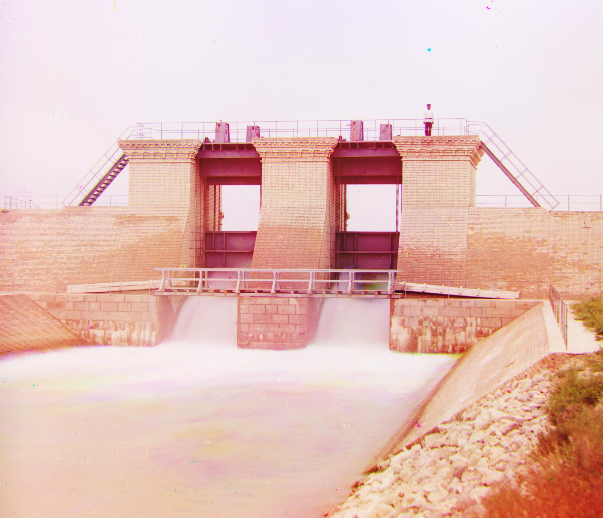

proj 1
single-scale alignment
For Single Scale Alignment, I need to align the Green and Red frames with the Blue Frame such that all the pixels spatially matched. My approach was to try sliding each frame, Green and Red, until this match happened. I used a brute force algorithm that first sets a search radius (Defaulting to 10) and then iterate through that search radius, at each iteration I used np.roll() to shift the Green and Red frames, by the displacement vector, and then I caluclated a metric to see how well the frames matched. For the single scale alignment, Euclidean distance worked to see how close the frame vectors were. In my algorithm I made sure to crop margins before calculating the metric since np.roll would corrupt the margins with wrap around. After finding the displacement vector with the lowest euclidean distance, I then returned this for both Green and Red frames, applied it to them, and then stacked them with the Blue frame to get my final result!
cathedral
G Channel Displacement: (5, 2)
R Channel Displacement: (12, 3)

monastery
G Channel Displacement: (-3, 2)
R Channel Displacement: (3, 2)

tobolsk
G Channel Displacement: (3, 2)
R Channel Displacement: (6, 3)
multi-scale pyramid alignment
For larger images, I was not able to use single scale alignment since a search radius of only 10 would be to small to find the right displacement vector, and increasing the search radius would cause a quadratic increase in runtime since we now need to iterate over n^2 potential displacement vectors. To solve this, I looked into using an image pyramid. This would involve scaling down both the primary and target frame (B) and using traditional single scale alignment on the scaled frames. I could then use the displacement vector I found from the scaled down frame and use it as a starting point for the next scale I chose to use. And by iterativeley scaling up the frames, I could efficiently find the correct displacement vector for the original image. For my Algorithm, I used 5 levels, starting off at 2^(-5) scale, finding the displacement vector, and then unscaling that displacement vector to see what it would be for the original frame. These cumalitive displacements are stored in a dr, dc variable while current displacements are stored in cdr, cdc variables. After 5 levels of the image pyramid, we are able to get close alignment! This is much more computationally efficient since at scaled down versions, we are able to essentially roll the image by factors more than just pixel by pixel, and then refine our search the next time we scale up.
Additionally I also switched from using the Euclidean distance metric to using the NCC (Normalized Cross Correlation) metric, since the Euclidean distance metric was having difficulty aligning the images due to extraneous circumstances such as brightness, exposure, or contrast. This meant that even if the pixels were aligned, these other factors would overshadow the difference, and alignment would be inaccurate. NCC removes the mean and helps normalize in context of brightness, contrast, and exposure, which led to more accuracy.
The one photo I had difficulty aligning was emir.tif, despite much hyperparameter tuning, metric tuning and mroe, it seems like the red frame was still slightly off. When looking at the raw frames, the issue seems to be in how different the intensity of the dress seems to be in every frame. In the B frame, the dress is the lightest, and in the R frame, the dress is the darkest. The variance of the dress color is signifantly different from the variance of the rest of the picture which could lead to issues in calculating the metrics for both L2 and NCC.
cathedral
G Channel Displacement: (-336, -388)
R Channel Displacement: (-329, -387)

church
G Channel Displacement: (25, 3)
R Channel Displacement: (58, -5)

emir
G Channel Displacement: (49, 24)
R Channel Displacement: (104, 55)
harvesters
G Channel Displacement: (60, 16)
R Channel Displacement: (124, 14)
icon
G Channel Displacement: (40, 17)
R Channel Displacement: (89, 23)
italil
G Channel Displacement: (38, 21)
R Channel Displacement: (77, 35)
lastochikino
G Channel Displacement: (-3, -2)
R Channel Displacement: (76, -9)
lugano
G Channel Displacement: (41, -17)
R Channel Displacement: (92, -29)
melons
G Channel Displacement: (82, 9)
R Channel Displacement: (177, 11)
monastery
G Channel Displacement: (-3, 2)
R Channel Displacement: (3, 2)

self_portrait
G Channel Displacement: (79, 29)
R Channel Displacement: (175, 34)

siren
G Channel Displacement: (49, -7)
R Channel Displacement: (96, -25)
three_generations
G Channel Displacement: (55, 13)
R Channel Displacement: (112, 10)
tobolsk_pyramid
G Channel Displacement: (3, 2)
R Channel Displacement: (6, 3)

extra multi-scale pyramid alignment
water_supply
G Channel Displacement: (47, 14)
R Channel Displacement: (108, 29)

milan
G Channel Displacement: (57, 12)
R Channel Displacement: (125, 24)
mozhaisk
G Channel Displacement: (41, 15)
R Channel Displacement: (91, 25)